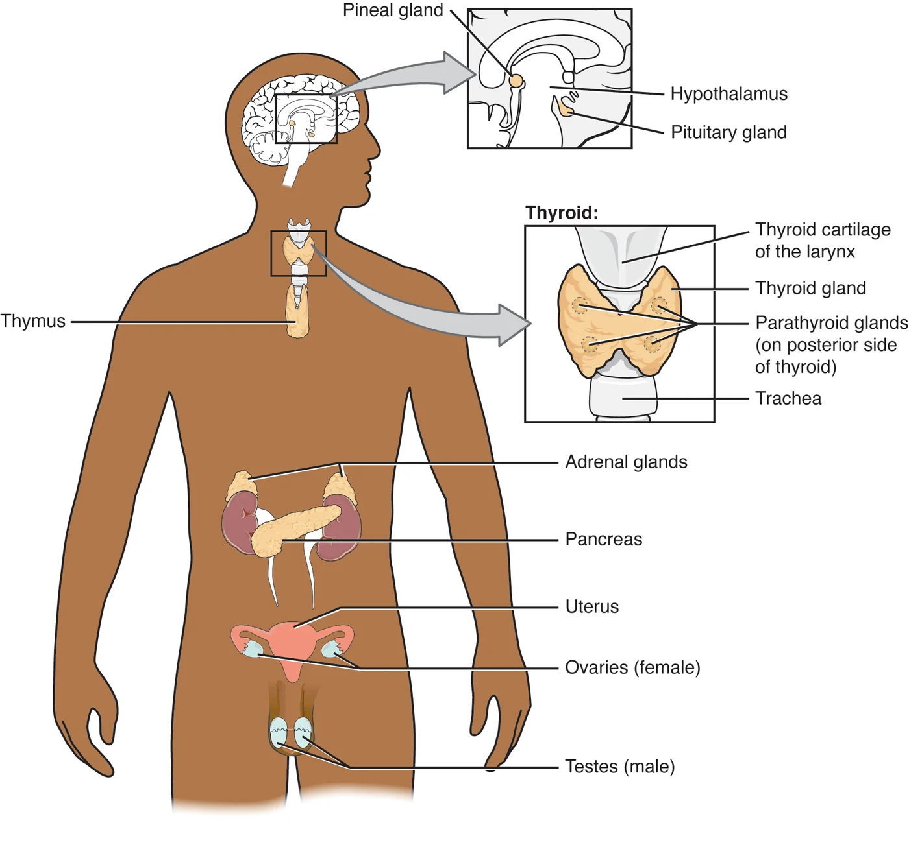
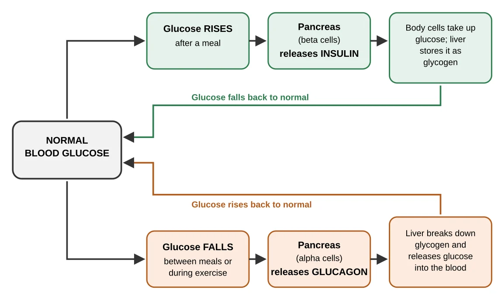
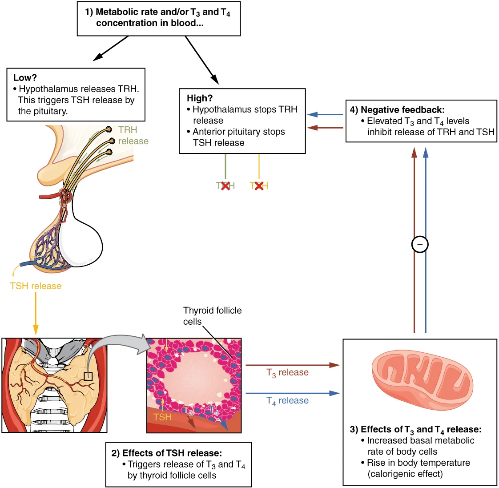

The Endocrine System
TEAS objective S.1.9 · Human Anatomy & Physiology
What the TEAS expects: you can match the main glands to their hormones and effects, and explain how negative feedback keeps hormone levels in range.
1. How hormones work
Endocrine glands release hormones directly into the blood. Hormones travel everywhere but act only on target cells that have the matching receptor. Exocrine glands (such as sweat and salivary glands) release their products through ducts instead. The pancreas is both: its islets are endocrine, and it also sends digestive enzymes through a duct.
Compared with the nervous system: nerve signals are fast and short-lived; hormone effects are slower to start but last longer.

Tap or click the figure to open it full size (in a new tab).
2. The main glands and hormones
Swipe the table sideways to see every column. →
| Gland | Hormone | Main effect |
|---|---|---|
| Hypothalamus | Releasing hormones (such as TRH) | Controls the pituitary. It is the link between the nervous and endocrine systems. |
| Anterior pituitary | GH (growth hormone) | Growth of bone and muscle |
| TSH | Stimulates the thyroid | |
| ACTH | Stimulates the adrenal cortex | |
| FSH and LH | Act on ovaries and testes | |
| Prolactin | Milk production | |
| Posterior pituitary (stores and releases hormones made by the hypothalamus) | ADH (antidiuretic hormone) | Kidneys reabsorb more water |
| Oxytocin | Uterine contractions in labor; milk letdown | |
| Thyroid | T3 and T4 (thyroid hormone) | Sets metabolic rate |
| Calcitonin | Lowers blood calcium | |
| Parathyroid glands | PTH (parathyroid hormone) | Raises blood calcium |
| Adrenal cortex | Cortisol | Stress response; raises blood glucose; suppresses inflammation and the immune response |
| Aldosterone | Kidneys keep sodium (and water follows) | |
| Adrenal medulla | Epinephrine and norepinephrine | Fight or flight |
| Pancreas (islets) | Insulin (beta cells) | Lowers blood glucose |
| Glucagon (alpha cells) | Raises blood glucose | |
| Thymus | Thymosin | Maturation of T cells (most active in childhood) |
| Pineal gland | Melatonin | Sleep–wake cycle |
| Ovaries / testes | Estrogen, progesterone / testosterone | Reproduction; secondary sex characteristics |
Pairs that oppose each other: insulin vs. glucagon (blood glucose); calcitonin vs. PTH (blood calcium).
Too much or too little: too little insulin action → diabetes mellitus (high blood glucose). Too little ADH → diabetes insipidus (large amounts of dilute urine). Too much thyroid hormone → hyperthyroidism (fast metabolism, weight loss, heat intolerance); too little → hypothyroidism (slow metabolism, weight gain, cold intolerance). Too much GH in childhood → gigantism.
Check 1: Blood calcium is low. Which gland responds, and with which hormone? Answer at the bottom of the page.
3. Negative feedback
Most hormones are controlled by negative feedback: the effect of a hormone switches off its own release. Like a thermostat, it keeps a value within a normal range.
Blood glucose example: after a meal glucose rises, so the pancreas releases insulin; glucose falls back, so insulin release drops. Between meals glucose falls, so the pancreas releases glucagon; glucose rises back.

Tap or click the figure to open it full size (in a new tab).
Thyroid example: the hypothalamus releases TRH, which tells the anterior pituitary to release TSH, which tells the thyroid to release T3 and T4. When thyroid hormone levels get high, they inhibit the hypothalamus and pituitary, so less TRH and TSH are released and thyroid output falls.

Tap or click the figure to open it full size (in a new tab).
Positive feedback is rare. It amplifies a change until an event ends it. Example: during labor, stretching of the cervix triggers oxytocin release, which causes stronger contractions, which cause more stretching, until the baby is born.
Check 2: Is the insulin response to a meal positive or negative feedback? Answer at the bottom.
Common traps
- Mixing up insulin and glucagon. Insulin lowers glucose; glucagon raises it.
- Thinking ADH and oxytocin are made in the posterior pituitary. They are made in the hypothalamus and released from the posterior pituitary.
- Mixing up the adrenal layers. Cortex: cortisol and aldosterone. Medulla: epinephrine.
- Calling labor contractions negative feedback. They are a classic positive feedback loop.
Learn it properly
- Overview of glands: OpenStax Anatomy and Physiology 2e, Section 17.1 An Overview of the Endocrine System: OpenStax (opens in a new tab)
- Thyroid: Section 17.4 The Thyroid Gland: OpenStax (opens in a new tab)
- Pancreas and blood glucose: Section 17.9 The Endocrine Pancreas: OpenStax (opens in a new tab)
Check answers
- The parathyroid glands, with PTH, which raises blood calcium.
- Negative feedback. Insulin brings glucose back down, which reduces the stimulus for more insulin.
ESCC TEAS Prep · Original study material written for Eastern Shore Community College. Figures from OpenStax, Anatomy and Physiology 2e, licensed CC BY 4.0, and an original diagram.